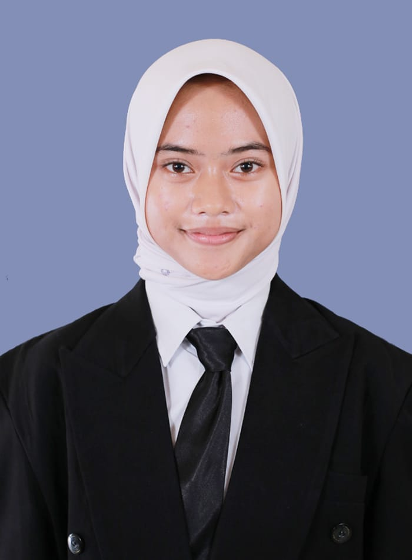
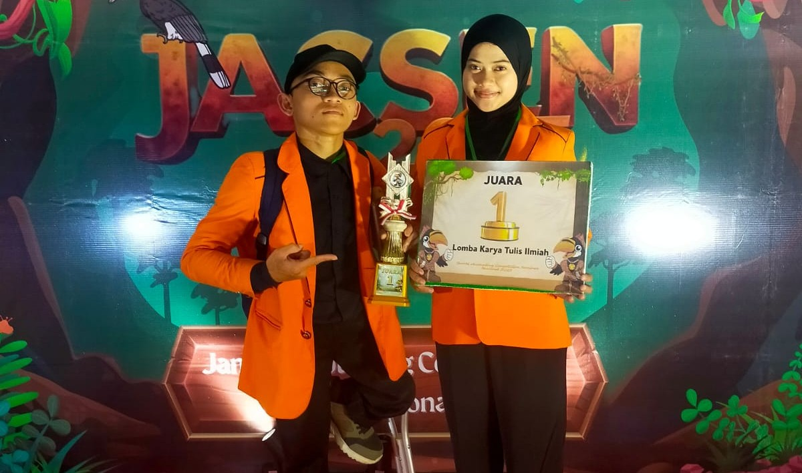
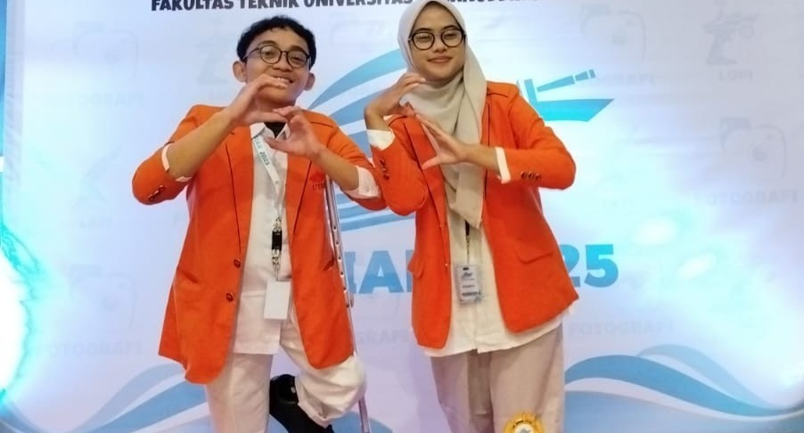
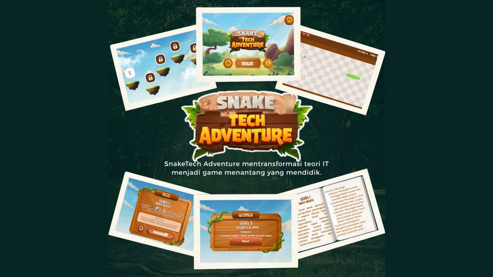
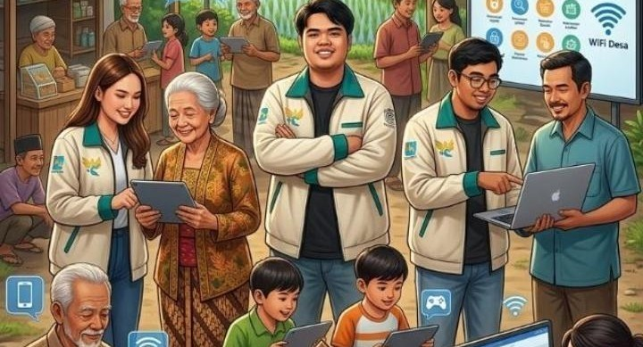
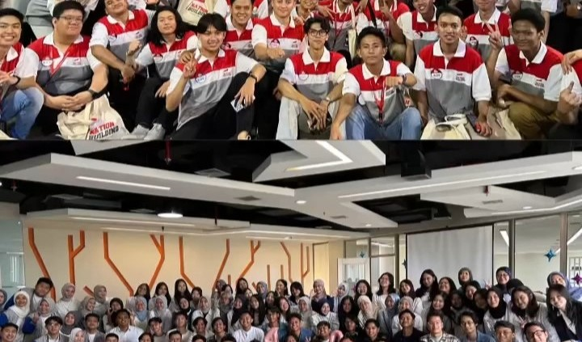

2+
Tahun Aktif
Tentang Saya
Crafting digital
experiences
Halo! Saya Anisa Shany Farah Angelica, seorang UI/UX Designer yang berfokus pada desain antarmuka modern, clean, dan user-friendly. Saya senang menciptakan pengalaman digital yang tidak hanya indah, tetapi juga nyaman digunakan.
0
Proyek Selesai
0
Sertifikat
0
Tahun Exp.
Perjalanan
Pendidikan &
Pengalaman
Riwayat pendidikan dan pengalaman yang membentuk saya menjadi developer seperti sekarang.
2024 — Sekarang
S1 Sistem Informasi
Universitas Internasional Semen Indonesia
Fokus pada UI/UX design, pengembangan antarmuka modern, dan pengalaman pengguna untuk aplikasi web dan mobile. IPK 3.75/4.00. Aktif dalam komunitas developer kampus.
2024 — Sekarang
himpunan mahasiswa sistem informasi staf ahli riset dan teknologi
Universitas Internasional Semen Indonesia
Berkontribusi dalam pengembangan program kerja berbasis teknologi
dan inovasi digital di lingkungan organisasi. Bertanggung jawab
dalam riset teknologi, pengembangan ide kreatif, serta mendukung
pelaksanaan kegiatan yang berkaitan dengan sistem informasi dan
transformasi digital mahasiswa.
Makassar 2025
Juara Favorit Lomba Karya Tulis Ilmiah Tingkat Nasional Universitas Hassanuddin
Monitoring Rute Menggunakan AIS
Jambi 2025
Juara 1 Lomba Karya Ilmiah Tingkat Nasional
Pemanfaatan Teripang dan Biji Nangka Sebagai Upaya Preventif Stunting
2021 — 2024
SMA Negeri 1 Ngimbang
Jurusan IPA — Lulus dengan predikat Sangat Memuaskan
Menjadi ketua Palang Merah Indonesia (PMI) dan aktif dalam kegiatan sosial dan pendidikan.
Portofolio
Karya &
Proyek Terbaik
Beberapa proyek yang pernah saya kerjakan.

Pemanfaatan Teripang dan Biji Nangka Sebagai Upaya Preventif Stunting
Proyek karya ilmiah tingkat nasional yang membahas inovasi pangan berbasis sumber daya lokal sebagai upaya preventif stunting. Penelitian ini berhasil meraih Juara 1 Lomba Karya Ilmiah Tingkat Nasional 2025 di Jambi.

Monitoring Rute Menggunakan AIS
Proyek karya tulis ilmiah mengenai pemanfaatan teknologi Automatic Identification System (AIS) untuk monitoring rute pelayaran secara real-time guna meningkatkan keamanan dan efisiensi transportasi laut. Proyek ini meraih Juara Favorit Lomba Karya Tulis Ilmiah Tingkat Nasional Universitas Hasanuddin 2025.

Proyek Visualisasi & Analisis Data
Proyek semester 3 yang berfokus pada visualisasi dan analisis data menggunakan dashboard interaktif untuk menampilkan informasi secara lebih jelas, modern, dan mudah dipahami pengguna.

SnakeTech Adventure
Proyek game edukasi berbasis Java yang dikembangkan pada semester 3
untuk mengubah materi dasar teknologi informasi menjadi permainan
interaktif dan menyenangkan. Game ini memiliki beberapa level, sistem
misi, serta tantangan yang membantu pemain memahami konsep perangkat
komputer, input device, dan materi IT lainnya.

POLA KEDUNG — Program Literasi Digital Multigenerasi
Proyek pengabdian masyarakat berbasis literasi digital yang bertujuan
meningkatkan pemahaman teknologi bagi berbagai generasi di Desa Kedungrejo.
Program ini berfokus pada edukasi keamanan digital, pemanfaatan internet,
serta pengenalan teknologi untuk mendukung masyarakat desa yang lebih mandiri
dan tangguh di era digital. Proyek ini juga berhasil memperoleh pendanaan
PPK Ormawa sebagai bentuk dukungan terhadap inovasi dan kontribusi
mahasiswa dalam pemberdayaan masyarakat.

Program volunteer community Empowerment Djarum beasiswa plus 2025
Kegiatan merupakan salah satu kegiatan volunteer dari beswan Djarum community. Kegiatan ini merujuk pada penguatan kapasitas sumber daya manusia seperti, time management, observasi pemberdayaan ekonomi/umkm, dan pelatihan kerja kepada kaum rentan seperti membuat ecoprint, menganyam dll.